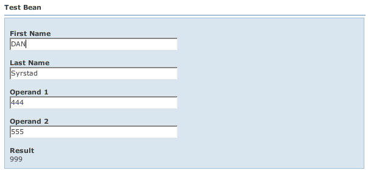

Back: SimpleExample Next: Actions
WWB is a method of programming by exception. That is, you only tell WWB to do something when its not doing what you want. Most commonly, WWB doesn't really know a good way to order fields on the page. By default, they are in alphabetical order and laid out in a three column grid. Alphabetical order isn't typically want you want, though. To change this, you can create a "beanprops" file. This file is named like other Wicket files - it has the same based name as your Page (or component that the BeanForm is embedded in).
Using the Simple Example above, let's customize it. Note that we're now using wicket.contrib.webbeans.examples.simple.CustomSimpleBeanPage (we won't reiterate the trivial HTML and Page code here). This page also has a CustomSimpleBeanPage.beanprops file, seen below:
# Customize TestBean.
TestBean {
cols: 1;
props: firstName, lastName, operand1, operand2, result, -number;
}
This file tells WWB : whenever you see a TestBean bean, lay it out in a one-column grid ("cols: 1") and display the properties ("props") in the order specified. Note that you refer to JavaBean properties without the prefix of "get", "set", or "is" and the first character is lower case. Also in the "props" parameter, we say "-number". This tells WWB to remove the "number" property from the page.
Note that we didn't specify a package name when we wrote "TestBean". The package name is optional as long as the class name is not ambiguous. WWB matches the class name first using the simple name, then using the package and class name. Again, WWB typically matches the right class. If you have two bean classes with the same name but in different packages, you'll need to specify the package name as well.
If you run this example, you'll see something like:

In addition to beanprops, most of the look and feel of the page can be customized via CSS.
Let's say you don't like the generated label "Operand 1" and "Operand 2" in the previous example, or you want to be able to localize them for another language. You can fix this by adding a Wicket properties file called CustomSimpleBeanPage.properties, such as:
operand1.label=Enter First Value operand2.label=Enter Second Value
And the default labels will be overridden. This will override the labels for the operand1 and operand2 property on any bean that defines those properties. To restrict this, you may prefix the property key with the bean name, such as:
TestBean.operand1.label=Enter First Value TestBean.operand2.label=Enter Second Value
WWB always tries to find the label using a key with the bean name first, then it falls back to just the property name.
If you want to do something more sophisticated, WWB supports Wicket resources in any beanprops value. For example, you could change CustomSimpleBeanPage.beanprops as follows:
# Customize TestBean.
TestBean {
cols: 1;
props:
firstName, lastName,
operand1{ label: "My ${propertyKey} Value" },
operand2,
result, -number;
}
You can see that you can specify parameters for each bean property. This example gives operand1 a label that is partially derived from the Wicket property "propertyKey". The "${xxx}" macro expression syntax substitutes the properties file value for key "xxx" into the value for the parameter. You can intermix text and multiple macro expressions in a single value. You can use the macro expression in any value, not just labels.
In CustomSimpleBeanPage, the bean is editable (i.e., not view-only), hence so are all the fields by default. The "result" property is view-only by default because it has no setter. If you were to pass "viewOnly" = true to the BeanMetaData constructor, all properties that were previously editable would be view-only. This is because bean properties inherit the bean's view-only setting. However, you can override this on a per-property basis. Let's say we change CustomSimpleBeanPage.beanprops as follows:
# Customize TestBean.
TestBean {
cols: 1;
props:
firstName,
lastName{ label: "Last Name (informational)"; viewOnly: true },
operand1{ label: "${operand1.Label}" },
operand2{ label: "${operand2.Label}" },
result, -number;
}
This causes the lastName property to get a different label and be view-only.
Back: SimpleExample Next: Actions